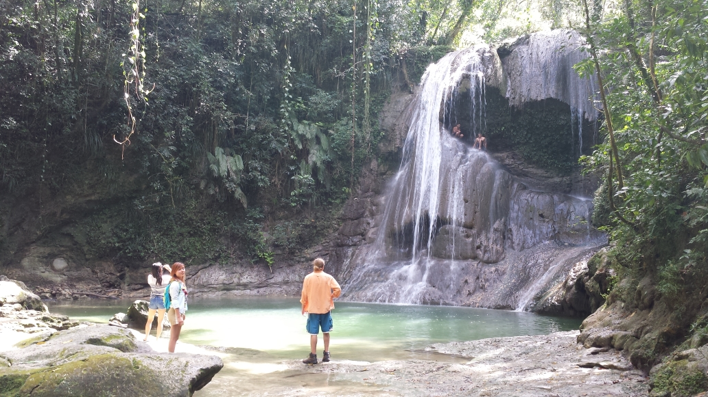

Travels: Puerto Rico
During the UWaterloo reading week of 2015, a group of friends and I went on a six day trip to Puerto Rico. Having never been to a spanish-dominant territory before (not counting the 5 minutes I spent beyond the Mexico border), I had no expectations for the local landscape and culture.
Upon landing, I found the local 20°C temperature to be a pleasant change from the subzero state of Waterloo, Ontario. This prompted the immediate discarding of my thick jeans onto the airport floor, and I slipped into a comfortable pair of swimming shorts. I kept the jeans. Looking around, I saw lush forests and heavy fog. We rented cars and drove towards our B&B location. Our GPS led us up a curvy mountain path, which was quite an exciting drive in the fog. Our destination surprised me as we stopped at the peak of the mountain, with one small, solitary mansion in view. I'm grateful to Owen for somehow managing to book such a place. We met up with our friends who arrived before us and kicked back for the night.
Memorable Moments
We wandered some 30 minutes down a muddy path in an envoloping forested area. The path led into a fantasy-like clearing where the sun shined through the broken canopy of trees, to reveal our destination: the Gonzalandia Falls. The waterfall was some 15 meters tall and flowed down an eroded rock cliff. There was a good opportunity to climb up and jump off the waterfall which we took. It was kind of dangerous because there were about 2 meters of rocks protruding horizontally from the base of the waterfall. While 2 meters of horizontal over 15 meters of free fall is trivial, if I don't jump far enough horizontally, I'll likely land on the rocks and break my legs or head. The best moment is when I'm standing on slippery rocks at the edge, looking down, with the entire waterfall bearing on my back, and knowing that something trivial within my control stands between success and an unfortunate accident. Situations like this invokes a hesitation over a simple jump, which I thought was neat. Its like knowing that your life depended on being able to carry a cup of water from the kitchen to your room without spilling any of it. Ordinarily trivial but nerve wracking once there's a consequence behind it. Anyhow, I stopped thinking so much about it and jumped. The water was icy cold, but it was exhilarating. We all jumped and no one died, which was nice.
We visited a neat local attraction, the Cueva Ventanna, or "Window Cave". We walked through a natural limestone cave that ends abruptly on the side of a cliff, providing a hell of a view. The cave itself is short, dark, and moist. A young local guide (no shirt, nice muscles, recommended view for the ladies) told us about some of the habitants of the cave, such as some spider-scorpion hybrid abomonation whose bite was compared to a hammer strike to one's genitals. We also saw snakes and bats living in the cave. At the end of the cave, the view is of bright grassy fields, long rivers, and local communities. Adding to the view is the tension of standing at the edge of a multi-hundred feet drop. A pinch of fear added an exciting flavor to the sight!

A 30 minute boat ride off the coast of somewhere later, we arrived at Guiligan's Island. Its a small island surrounded by supple beaches and warm shallow water. A gentle fresh-water river flows through the middle of the island, forcing visitors to portage all their belongings should they wish to visit the other half. The river itself functions wonderfully as a one-way lazy river. If you're willing to swim/walk upstream, you can lazily float your way back down. Enveloping both sides of the river, one will find a healthy population of mangrove trees. Their tall roots adds a cleansing feeling to the river itself. Beware the shallow water with heavy vegetation, all my friends got lightly stung by jellyfish in there.
Staring at the 3 meter wave infront of me, sharp volcanic rock behind me, I thought "Crap I might actually die". I tried to hang onto the natural seawall I was exploring, but mother nature took no mercy. The wave hit me and ripped my grip off the rock as easily as a curious teenager plucking a snail off a leaf. I think I flew. My footwear and iron ring were immediately ripped from me and lost. I landed back on the seawall on my shoulder, losing some meat in the process, and rolled helplessly into the ocean from the momentum. I limped back to shore where I was lectured by a local about how one tourist dies there every 2 weeks. In hindsight, I shouldn't have been playing on the jagged rocks that shore-bound waves were exploding on. I was tempted by the potential to find some cool sea critters. Luckily I lived and was gratefully patched up by a friend in healthcare. It was a good reminder in humility that young adults are not immortal.
Food
Every family restaurant, fine dining restaurant, and fast food restaurant will have fried plantains somewhere on their menu. It is a local favorite, also locally referred to as "Mofongo", which strangely feels like something I would name a pet monkey. It looks like a banana but tastes like a potato; carbs-y with no traces of sweetness. I wasn't a huge fan, but moreso because I was trying to diet at the time rather than any demirit of its taste. You'll probably have a hard time avoiding giving it a try if you're ever there - its literally everywhere.
The variety of food and restaurants we tried in Puerto Rico was polarizing. We carried a wing-it mentality that prevented us from doing initial research on where we wanted to eat. I was surprised to find out 90% of restaurants closed at 6PM and refused us entry with our post-6PM-money. It seems the working class of Peurto Rico figured out how to lead a happy life. As a result, it usually took our starving selves a good 2 hours to find an open food establishment.
One restaurant had 3 out of 20 or so tables filled. We were seated and ordered our food at 7PM, but did not arrive until 8:20PM.This does not make starving young adults happy. I shared a 30$ fish with a friend, but it ended up being not too big and not too adequate to sooth our maddenning desire to fill our stomachs. Afterwards, we took another swing by a nearby McDonalds and my impression of the chain's reliability to serve cheap and filling food skyrocketed.
On another day, we went to another local restaurant (again, starving) and I ordered a seafood jambalaya plate for 20$. The gargantuan plate that was served infront of me was enough to feed a small greek family for two meals. The seasoned rice, local shellfish, and mofongo entered my mouth at breakneck speeds. There was enough to feed my friends, and we also had leftovers for the next breakfast. We also had some pizza elsewhere and it was pretty awesome.